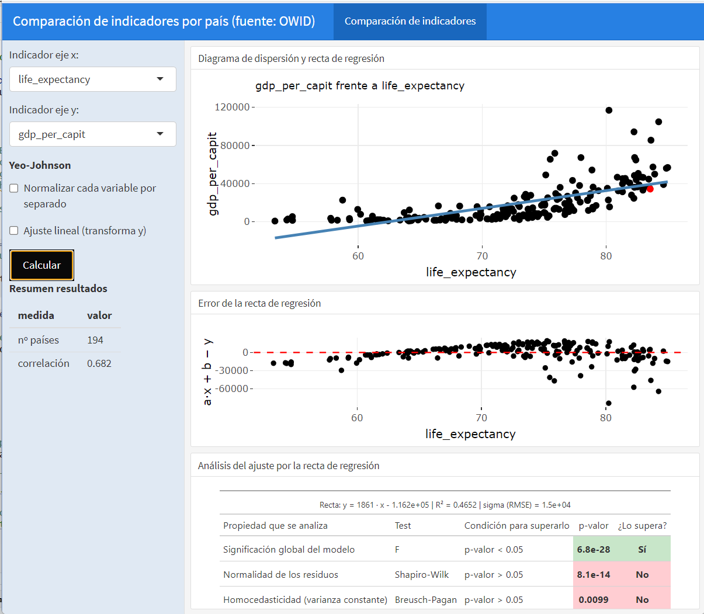
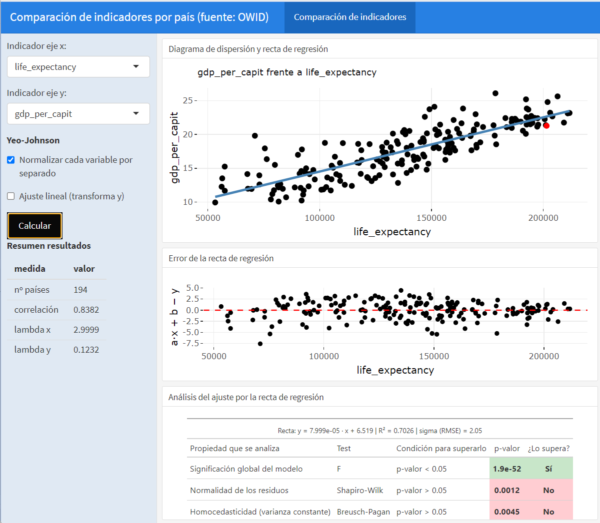
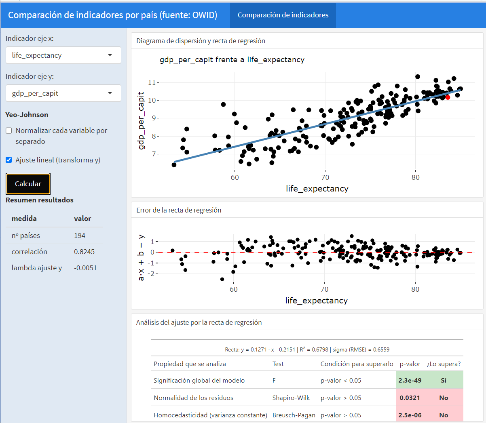

8 Análisis de atributos
Fecha de compilación: 2026-10-22
Instalación y carga de librerías
if (!require(highcharter)) install.packages('highcharter')
library(highcharter) # gráficos interactivos (Highcharts)
if (!require(factoextra)) install.packages('factoextra')
library(factoextra) # visualización de PCA y clustering
if (!require(openxlsx)) install.packages('openxlsx')
library(openxlsx) # lectura/escritura de Excel
if (!require(plotly)) install.packages('plotly')
library(plotly) # gráficos interactivos (ggplotly)
if (!require(ggplot2)) install.packages('ggplot2')
library(ggplot2) # gramática de gráficos
if (!require(tidyverse)) install.packages('tidyverse')
library(tidyverse) # manipulación y visualización de datos
theme_set(theme_bw()) # tema de los gráficos, igual en todo el libro
source("../utilidades.R")# funciones auxiliares del cursoowid_country <- read.xlsx("https://ctim.es/AEDV/data/owid_country.xlsx",sheet=1) |> # países OWID
as_tibble()Librerías utilizadas en este capítulo
stats: la librería principal del capítulo en cuanto al cálculo, aunque no aparece en ningúnlibrary()porque forma parte de la instalación base de R y se carga siempre automáticamente. De ella salen las funciones matemáticas que hacen el trabajo de fondo:cor()(correlación, de Pearson o de Spearman),lm()(recta de regresión, usada directamente y también dentro degeom_smooth(method = lm)),prcomp()(el cálculo del PCA, núcleo de la segunda mitad del capítulo) ykmeans()(la agrupación de la última sección). A ellas se sumanscale()(tipificar las variables antes del PCA),na.omit()(descartar registros conNA) yeigen()(autovalores y autovectores, mencionada al deducir el PCA a mano).factoextra: visualiza los resultados del PCA con gráficos estáticos ya preparados: biplot (fviz_pca_biplot), contribución de cada variable (fviz_contrib) y agrupaciones (fviz_cluster). Sus versiones interactivas se construyen conplotly.highcharteryplotly: los gráficos interactivos con los que se exploran las correlaciones (hchartsobre la matriz de correlación y sobre el resultado deprcomp) y las proyecciones sobre las componentes.openxlsx: lectura de los datos de los ejemplos, en formato Excel.ggplot2ytidyverse: la visualización estática y la manipulación de datos de siempre.
Además, algunos ejemplos usan funciones auxiliares del fichero utilidades.R del curso: aedv_lm_analisis() para valorar un ajuste lineal, aedv_lm_error_grafico() para dibujar el error de ese ajuste, aedv_tabla_lm() para presentar su resultado, aedv_pca_varianza_grafico() para dibujar la varianza explicada por cada componente principal, aedv_pca_loadings_grafico() para dibujar la contribución de cada variable a una componente, aedv_pca_biplot() para dibujar el biplot, aedv_pca_n_componentes() para saber cuántas componentes acumulan el 85 % de la varianza, aedv_kmeans(), aedv_kmeans_grafico() y aedv_kmeans_grupos() para agrupar con k-means sobre las componentes, aedv_matriz_correlacion() para dibujar la matriz de correlación con plotly, y aedv_yeo_johnson() y aedv_yeojohnson_lambda() para la transformación de Yeo-Johnson. aedv_pca_biplot() y aedv_kmeans_grafico() tienen una versión interactiva, con el argumento dinamico = TRUE. El propio capítulo define, además, la función fijar_signo(), que fija el signo de las componentes principales (sección Cálculo PCA con prcomp).
8.1 Introducción
Técnicas de análisis de atributos cubiertas en este capítulo
El análisis de atributos tiene como objetivo estudiar, comparar y explorar las relaciones entre las variables numéricas (atributos) de un conjunto de datos. En este capítulo se abordan cuatro técnicas fundamentales:
- Regresión lineal y transformaciones no lineales (Yeo-Johnson): estudio de la relación entre dos variables numéricas.
- Matriz de correlación: visión global de las relaciones entre todos los atributos numéricos del conjunto de datos.
- Análisis de Componentes Principales (PCA): reducción de la dimensionalidad reemplazando las variables originales por nuevas variables —combinaciones lineales de las primeras— que representan de forma más compacta la información esencial.
- Agrupación con k-means: reparto de las áreas geográficas en grupos con un comportamiento parecido, a partir de las componentes principales.
8.2 La elección de los atributos en datos multidimensionales
Antes de aplicar cualquiera de las técnicas de este capítulo, hay que dar un paso previo que a menudo se pasa por alto: decidir qué atributos vamos a usar para comparar las áreas geográficas. Cuando trabajamos con datos de áreas geográficas, que es lo habitual en esta asignatura, tenemos que fijar la colección de atributos que compararán las distintas áreas, y esa elección no es única: depende del objetivo del estudio.
Supongamos que disponemos de datos de población de los municipios canarios desglosados por año, sexo, nacionalidad (total / española / extranjera) y grupos de edad. Se trata de un dataset multidimensional: cada dato de población viene identificado por la combinación de varias variables categóricas. Es importante reflexionar sobre cómo combinar o seleccionar estos indicadores para generar nuestros atributos de forma coherente. Veamos algunas formas posibles de hacerlo para este ejemplo:
Análisis por sexo/nacionalidad. Creamos atributos combinando los valores posibles de sexo y nacionalidad (quitando las opciones “total”). Fijamos el grupo de edad a “TOTAL” y fijamos el año a un valor dado (o calculamos la media agrupando por años). Esto nos daría, para cada área geográfica, 4 atributos correspondientes a las combinaciones de sexo (2) y nacionalidad (2): española/hombre, española/mujer, extranjera/hombre y extranjera/mujer.
Análisis por grupos de edad. Fijamos el año a un valor dado (o promediamos por años), tomamos sexo y nacionalidad como “TOTAL”, y nos quedan como atributos los grupos de edad.
Análisis de la evolución por fechas. Tomamos sexo, nacionalidad y grupos de edad como “TOTAL” y usamos como atributos las fechas. Previamente filtramos las fechas para asegurar que todas las áreas geográficas tienen datos en todas las fechas seleccionadas, de modo que no queden huecos en la tabla.
Como vemos, hay múltiples formas de enfocar un análisis de atributos.
Idea clave: fijar dimensiones para definir atributos
En un dataset multidimensional, definir los atributos consiste en fijar (si procede) el valor de algunas dimensiones y tomar como atributos los valores de otras (que pueden combinarse entre sí). La condición imprescindible es que, para cada área geográfica y cada atributo seleccionado, exista un único valor; para garantizarlo hay que fijar todas las dimensiones que hayan quedado libres. Si alguna dimensión libre no se fija, la misma área geográfica tendría varios valores para el mismo atributo y la tabla dejaría de ser válida para el análisis.
Esta reflexión enlaza con el formato tidy visto en el capítulo de procesado de datos: partimos de una tabla en formato largo (una observación por fila, con sus variables categóricas) y, mediante filtrados, agregaciones (group_by + summarise) y un pivot_wider, la convertimos en la tabla “áreas geográficas × atributos” que requieren la matriz de correlación y el PCA.
8.3 Relación entre dos variables
Correlación
En la sección 5.4 se introdujo el concepto de correlación en el contexto de las series temporales. En esta sección se profundiza en su uso para estudiar la relación entre dos variables numéricas cualesquiera.
La correlación es una medida que cuantifica el grado y la dirección de la relación lineal entre dos variables. Dados dos vectores de observaciones \(x_k\) e \(y_k\), la correlación viene dada por:
\[ r=\frac{\sum_{k=1}^m(x_{k}-\bar x)(y_{k}-\bar y)} {\sqrt{\sum_{k=1}^m(x_{k}-\bar x)^2\sum_{k=1}^m(y_{k}-\bar y)^2}} \]
Interpretación del coeficiente de correlación
El valor de \(r\) se encuentra siempre en el rango \([-1, 1]\) y se interpreta del siguiente modo:
- Si \(r=1\): existe una relación lineal positiva perfecta entre las variables; cuando una aumenta, la otra también lo hace, y todos los puntos del diagrama de dispersión caen exactamente sobre la recta de regresión.
- Si \(r=0\): no existe relación lineal entre las variables, y el diagrama de dispersión muestra una nube de puntos dispersa sin patrón aparente.
- Si \(r=-1\): existe una relación lineal negativa perfecta; cuando una variable aumenta, la otra disminuye.
Una propiedad importante de la correlación es que es invariante respecto a la unidad de medida (siempre que la transformación entre unidades sea lineal): da igual medir la población en millones o en miles, o una temperatura en grados Celsius o Fahrenheit, el valor de la correlación no cambia.
Correlación de Pearson y correlación de Spearman
El coeficiente \(r\) anterior es la correlación de Pearson, que mide la fuerza de la relación lineal. Cuando la relación entre dos variables es no lineal pero sí monótona (una crece siempre que la otra crece, aunque no a ritmo constante), Pearson la infravalora. En esos casos se usa la correlación de Spearman, \(\rho\), que no es más que la correlación de Pearson calculada sobre los rangos (las posiciones ordenadas) de los datos en lugar de sobre sus valores. Por ello:
- Detecta cualquier relación monótona, sea o no lineal, y alcanza el valor \(\pm 1\) cuando una variable es una función monótona perfecta de la otra.
- Es robusta frente a valores atípicos e invariante ante transformaciones monótonas (logaritmos, raíces, etc.): aplicar un \(\log\) no altera su valor.
- Comparar ambas es un diagnóstico útil: si Spearman es claramente mayor (en valor absoluto) que Pearson, la relación es monótona no lineal y conviene valorar una transformación de las variables (como la de Yeo-Johnson que veremos más adelante).
En R se calcula añadiendo method = "spearman" a la función cor: cor(x, y, method = "spearman").
A continuación se muestra un ejemplo que compara el total de delitos cometidos y el consumo total de pan y cereales por comunidades autónomas, a partir de datos del INE. La correlación se calcula con la función cor:
INE.CONSUMO.PAN.DELITOS <- read_csv("https://ctim.es/AEDV/data/INE.CONSUMO.PAN.DELITOS.csv") |> # datos del INE
as_tibble()
INE.CONSUMO.PAN.DELITOS## # A tibble: 19 × 3
## `Comunidades y Ciudades Autónomas` total.consumo.pan.cereales total.delitos
## <chr> <dbl> <dbl>
## 1 01 Andalucía 6957. 68853.
## 2 02 Aragón 1117. 8458.
## 3 03 Asturias, Principado de 927. 7825.
## 4 04 Balears, Illes 944. 10590.
## 5 05 Canarias 1805. 19146.
## 6 06 Cantabria 500. 4392.
## 7 07 Castilla y León 2130. 14720.
## 8 08 Castilla - La Mancha 1718. 11670.
## 9 09 Cataluña 6140. 58416.
## 10 10 Comunitat Valenciana 4167. 44809.
## 11 11 Extremadura 926. 7206.
## 12 12 Galicia 2389. 17904.
## 13 13 Madrid, Comunidad de 5289. 45146.
## 14 14 Murcia, Región de 1198. 12126.
## 15 15 Navarra, Comunidad Foral de 528. 4244.
## 16 16 País Vasco 1834. 15788.
## 17 17 Rioja, La 263 2372.
## 18 18 Ceuta 65.6 1759.
## 19 19 Melilla 62.8 1458.paste("correlación =",
cor( # correlación de Pearson
INE.CONSUMO.PAN.DELITOS$total.consumo.pan.cereales,
INE.CONSUMO.PAN.DELITOS$total.delitos)
)## [1] "correlación = 0.98987954033385"Observamos una correlación alta entre ambas variables. Vamos a ilustrar la relación entre las variables con un diagrama de dispersión:
p <- INE.CONSUMO.PAN.DELITOS |>
ggplot(aes(total.consumo.pan.cereales,total.delitos,label=`Comunidades y Ciudades Autónomas`)) + # pan vs. delitos
geom_point() + # puntos
geom_smooth(method = lm, se = FALSE) # recta de regresión
ggplotly(p) # versión interactiva
Observamos que como la correlación es alta, los puntos se encuentran próximos a la recta de regresión. Este ejemplo nos ilustra además que una alta correlación entre variables no implica que exista una causalidad entre las variables observadas, es decir, el consumo de pan y cereales no es un factor que provoque delincuencia. La correlación alta es debida a que ambas variables crecen con la población y la relación entre ellas es indirecta dado que las comunidades con más población consumen más pan y a la vez se producen más delitos. Establecer relaciones de causalidad, exclusivamente a partir de la correlación entre variables, es un error habitual que el buen científico de datos debe evitar. En este caso, la población sería lo que se denomina, una variable latente, es decir, una variable que explica el comportamiento observado pero que no se encuentra entre las variables estudiadas.
Recta de regresión
Al estudiar la posible relación lineal entre 2 variables utilizamos la recta de regresión que podemos expresar como \(y=ax+b\). Los coeficientes \(a\) y \(b\) de la recta de regresión se calculan minimizando el error cuadrático entre la recta y la nube de puntos dado por
\[ Error(a,b)=\sum_{k=1}^m (ax_k+b-y_k)^2 \] Vamos a medir la calidad del ajuste por la recta de regresión de dos formas distintas. En primer lugar usando el \(RMSE\) (root mean square error) dado por
\[ RMSE=\sqrt{\frac{\sum_{k=1}^m (ax_k+b-y_k)^2}{m}} \] Como vemos, el \(RMSE\) se calcula directamente a partir de la fórmula anterior \(Error(a,b)\) y podemos decir que los coeficientes de la recta de regresión son los que minimizan el \(RMSE\). Cuanto más pequeño sea el valor de \(RMSE\) mejor es el ajuste.
Otra forma de medir la calidad del ajuste es usar el coeficiente de determinación \(R^2\) dado por
\[ R^2=1 - \frac{\sum_{k=1}^m (ax_k+b-y_k)^2}{\sum_{k=1}^m (y_k-\bar y)^2} \]
\(R^2\) se mueve entre 0 y 1. Cuanto más cerca de 1, mejor es el ajuste por la recta de regresión, al igual que para la correlación, el valor 1 corresponde a una relación lineal perfecta. Si \(R^2\) vale cero no hay relación lineal entre las variables. El valor de \(R^2\), al igual que la correlación, es independiente de la unidad de medida de las variables o de si las variables están tipificadas o no (tipificar, o estandarizar, una variable consiste en restar la media y dividir por la desviación típica).
Relación entre \(R^2\) y la correlación \(r\)
Para la regresión lineal simple (una sola variable explicativa), se cumple que \(R^2 = r^2\), es decir, el coeficiente de determinación es el cuadrado de la correlación. Esto significa que una correlación de \(r = 0.9\) implica que el modelo lineal explica el \(81\%\) de la variabilidad de los datos (\(R^2 = 0.81\)). Esta relación no se cumple en regresión múltiple (con más de una variable explicativa).
La aproximación por regresión lineal genera unos residuos \(ax_k+b-y_k\) que podemos analizar usando el mismo tipo de tests estadísticos ya utilizados en el capítulo de series temporales. Concretamente la función aedv_lm_analisis en utilidades.R, ajusta la recta de regresión y devuelve en una tabla los valores que permiten juzgar el ajuste. La aplicamos al ejemplo anterior del consumo de pan y los delitos:
aedv_lm_analisis(INE.CONSUMO.PAN.DELITOS$total.consumo.pan.cereales, # ajusta la recta y evalúa el ajuste
INE.CONSUMO.PAN.DELITOS$total.delitos) |>
mutate(across(everything(), \(x) signif(x, 4))) # redondeamos a 4 cifras significativas## sigma R2 F_p_value SW_p_value BP_p_value pendiente termino_indep
## 1 2936 0.9799 7.388e-16 0.3632 0.05741 9.607 -914.8Cómo leer la salida de aedv_lm_analisis
sigma: desviación típica de los residuos. Como la media de los residuos de la regresión lineal es cero, se cumple que \(RMSE =\)sigma.- \(R^2\): coeficiente de determinación, ya descrito.
F_p_value: p-valor del estadístico F; valores muy pequeños indican que el modelo, globalmente, es significativo.F_p_value< 0.05 supera el test: el modelo es significativo.SW_p_value: p-valor del test de normalidad de Shapiro-Wilk sobre los residuos. Valores altos indican que no podemos descartar normalidad.SW_p_value> 0.05 supera el test: los residuos son compatibles con la normalidad.BP_p_value: p-valor del test de Breusch-Pagan. Valores altos indican que no podemos descartar homocedasticidad, es decir, que la dispersión de los residuos es constante a lo largo del rango de \(x\).BP_p_value> 0.05 supera el test: residuos compatibles con homocedasticidad.pendienteytermino_indep: los coeficientes \(a\) y \(b\) de la recta \(y = ax + b\).
Antes de leer los tests conviene mirar el error de la recta, \(ax_k+b-y_k\), frente a la variable \(x\): es su lectura gráfica. Si el error se comporta como ruido, los puntos forman una banda de anchura parecida alrededor del cero, sin ninguna forma reconocible; un embudo que se abre (la dispersión crece con \(x\)) anticipa un test de Breusch-Pagan no superado, y una curva o una tendencia indican que la relación no es lineal. La función aedv_lm_error_grafico(x, y) de utilidades.R ajusta la recta igual que aedv_lm_analisis y dibuja ese error. Si se le pasan los nombres de cada punto, en la versión estática rotula los que se alejan más de dos desviaciones típicas; con dinamico = TRUE devuelve un gráfico interactivo de plotly en el que el nombre aparece al pasar el ratón por cada punto, que es la opción que usamos aquí:
aedv_lm_error_grafico(INE.CONSUMO.PAN.DELITOS$total.consumo.pan.cereales, # x
INE.CONSUMO.PAN.DELITOS$total.delitos, # y
nombres = INE.CONSUMO.PAN.DELITOS$`Comunidades y Ciudades Autónomas`, # en el cuadro emergente
titulo = "Error de la recta: delitos frente a consumo de pan y cereales",
x_lab = "total.consumo.pan.cereales",
dinamico = TRUE) # versión interactivaFigure 8.1: Error de la recta de regresión del total de delitos frente al consumo de pan y cereales
Leer los p-valores en una fila de números obliga a recordar, para cada test, si se supera con un valor alto o bajo. Igual que hicimos con los tests de series temporales usando aedv_tabla_tests, la función aedv_tabla_lm de utilidades.R presenta la salida de aedv_lm_analisis como una tabla con una fila por test, el p-valor en verde si el test se supera y en rojo si no, y la recta, el \(R^2\) y sigma en el subtítulo:
aedv_lm_analisis(INE.CONSUMO.PAN.DELITOS$total.consumo.pan.cereales, # ajuste de la recta
INE.CONSUMO.PAN.DELITOS$total.delitos) |>
aedv_tabla_lm("Consumo de pan y cereales frente a número de delitos") # tabla coloreada| Consumo de pan y cereales frente a número de delitos | ||||
| Recta: y = 9.607 · x - 914.8 | R² = 0.9799 | sigma (RMSE) = 2936 | ||||
| Propiedad que se analiza | Test | Condición para superarlo | p-valor | ¿Lo supera? |
|---|---|---|---|---|
| Significación global del modelo | F | p-valor < 0.05 | 7.4e-16 | Sí |
| Normalidad de los residuos | Shapiro-Wilk | p-valor > 0.05 | 0.3632 | Sí |
| Homocedasticidad (varianza constante) | Breusch-Pagan | p-valor > 0.05 | 0.0574 | Sí |
Fíjese en la columna Condición para superarlo: en el test F el modelo se considera significativo cuando el p-valor es pequeño, al contrario que en los otros dos tests, donde se supera con un p-valor alto.
Como segundo ejemplo, comparamos el ajuste de la esperanza de vida (life_expectancy) frente al PIB per cápita (gdp_per_capit) de los países, usando primero el PIB per cápita tal cual y después su logaritmo:
lm_pib <- aedv_lm_analisis(owid_country$gdp_per_capit, owid_country$life_expectancy) # PIB per cápita
lm_log_pib <- aedv_lm_analisis(log(owid_country$gdp_per_capit), owid_country$life_expectancy) # su logaritmoCon el PIB per cápita tal cual, el error y la tabla de tests son:
aedv_lm_error_grafico(owid_country$gdp_per_capit, owid_country$life_expectancy,
nombres = owid_country$location, # en el cuadro emergente
titulo = "Error de la recta: esperanza de vida frente a PIB per cápita",
x_lab = "gdp_per_capit",
dinamico = TRUE) # versión interactivaFigure 8.2: Error de la recta de regresión de la esperanza de vida frente al PIB per cápita
| Esperanza de vida frente a PIB per cápita | ||||
| Recta: y = 0.00025 · x + 68 | R² = 0.4652 | sigma (RMSE) = 5.498 | ||||
| Propiedad que se analiza | Test | Condición para superarlo | p-valor | ¿Lo supera? |
|---|---|---|---|---|
| Significación global del modelo | F | p-valor < 0.05 | 6.8e-28 | Sí |
| Normalidad de los residuos | Shapiro-Wilk | p-valor > 0.05 | 2.3e-08 | No |
| Homocedasticidad (varianza constante) | Breusch-Pagan | p-valor > 0.05 | 0.1673 | Sí |
Y con su logaritmo:
aedv_lm_error_grafico(log(owid_country$gdp_per_capit), owid_country$life_expectancy,
nombres = owid_country$location, # en el cuadro emergente
titulo = "Error de la recta: esperanza de vida frente al logaritmo del PIB per cápita",
x_lab = "log(gdp_per_capit)",
dinamico = TRUE) # versión interactivaFigure 8.3: Error de la recta de regresión de la esperanza de vida frente al logaritmo del PIB per cápita
| Esperanza de vida frente al logaritmo del PIB per cápita | ||||
| Recta: y = 5.105 · x + 25.54 | R² = 0.6798 | sigma (RMSE) = 4.254 | ||||
| Propiedad que se analiza | Test | Condición para superarlo | p-valor | ¿Lo supera? |
|---|---|---|---|---|
| Significación global del modelo | F | p-valor < 0.05 | 2.3e-49 | Sí |
| Normalidad de los residuos | Shapiro-Wilk | p-valor > 0.05 | 1.4e-08 | No |
| Homocedasticidad (varianza constante) | Breusch-Pagan | p-valor > 0.05 | 0.2374 | Sí |
Con el logaritmo, \(R^2\) pasa de 0.47 a 0.68 y sigma baja de 5.5 a 4.25 años. Es decir, la relación entre las dos variables está más cerca de ser lineal en el logaritmo del PIB per cápita que en el propio PIB per cápita. Las tablas muestran además lo que esos dos números no dicen: el test de Shapiro-Wilk sale no superado también con el logaritmo, así que los residuos siguen sin ser normales y conviene mirarlos con un histograma o un QQ-plot antes de sacar conclusiones. Más adelante, en la sección dedicada a la transformada de Yeo-Johnson, veremos cómo buscar automáticamente la transformación que mejora el ajuste lineal.
8.4 La transformada Yeo-Johnson
Transformar variables (por ejemplo aplicar un logaritmo) puede ser una herramienta muy útil en el contexto del análisis de atributos. La transformada no-lineal de Yeo-Johnson, ([YeJo00]), \(T(y;\lambda)\) que depende de un parámetro \(\lambda\) se usa habitualmente para transformar variables y se define como:
\[ T(y;\lambda)=\left\{ \begin{array} [c]{ccc}% \frac{(y+1)^{\lambda}-1}{\lambda} & si & y\geq0,\quad\lambda\neq0\\ \log(y+1) & si & y\geq0,\quad\lambda=0\\ -\frac{(-y+1)^{2-\lambda}-1}{2-\lambda} & si & y\leq0,\quad\lambda\neq2\\ -\log(-y+1) & si & y\leq0,\quad\lambda=2 \end{array} \right. \]
A continuación presentamos la gráfica de esta transformada para diferentes valores del parámetro \(\lambda\)
Figure 8.4: Gráfica de la transformada de Yeo-Johnson para diferentes valores del parámetro lambda
El uso más habitual de la transformada de Yeo-Johnson es la aproximación a una normal de la distribución de una variable reduciendo su asimetría y el peso de los valores extremos.
En este contexto, el valor \(\lambda\) óptimo de la transformada de Yeo-Johnson se calcula por máxima verosimilitud: se elige el \(\lambda\) con el que los valores transformados son más compatibles con una distribución normal. Esa búsqueda la hace aedv_yeojohnson_lambda de utilidades.R, acotada al intervalo \([-1, 3]\) por lo que se explica más abajo.
Veamos como se aplica, por ejemplo, a colorear un mapa de calor donde habitualmente los colores se normalizan linealmente entre su mínimo y su máximo. Un indicador con valores extremos —como population dentro de Europa, donde casi todos los países tienen unos pocos millones de habitantes salvo Rusia, que se dispara muy por encima del resto— deja casi toda la columna del mismo tono, porque el valor extremo por sí solo fija el máximo de la escala y aplasta al resto. Reconstruimos la tabla de indicadores europeos y calculamos el \(\lambda\) óptimo de cada uno:
indicadores <- c("population", "median_age", "life_expectancy", "aged_65_older", # indicadores a comparar
"aged_70_older", "gdp_per_capit", "hospital_beds_per_thousand",
"human_development_index")
europa <- owid_country |>
filter(continent == "Europe", !is.na(aged_65_older)) |> # países de Europa
column_to_rownames(var = "location") |> # país como nombre de fila
select(all_of(indicadores)) # solo los indicadores de interés
tibble(
indicador = indicadores,
lambda = sapply(europa, aedv_yeojohnson_lambda) # lambda óptimo por indicador
) |>
mutate(lambda = round(lambda, 2)) |> # redondeamos
knitr::kable(caption = "Lambda de Yeo-Johnson estimado para cada indicador")| indicador | lambda |
|---|---|
| population | -0.01 |
| median_age | 1.04 |
| life_expectancy | 3.00 |
| aged_65_older | 2.35 |
| aged_70_older | 1.22 |
| gdp_per_capit | 0.40 |
| hospital_beds_per_thousand | -0.26 |
| human_development_index | 3.00 |
Un \(\lambda\) próximo a 1 corresponde a una transformación casi lineal, que apenas cambia la variable; cuanto más se aleja de 1, más fuerte es la transformación (con \(\lambda = 0\), para valores positivos, es el logaritmo \(\log(y+1)\)).
Repetimos ahora el mapa de calor coloreando con el indicador transformado en vez de con el original. Para poder compararlos, dibujamos los dos mapas juntos:
normalizar <- function(v) (v - min(v, na.rm = TRUE)) / (max(v, na.rm = TRUE) - min(v, na.rm = TRUE)) # a escala 0-1
# tabla larga con los dos coloreados, para dibujarlos en dos paneles
mapa_calor <- bind_rows(
europa |> mutate(across(everything(), normalizar)) |> # normalización lineal
rownames_to_column("pais") |> mutate(metodo = "Normalización lineal"),
europa |> mutate(across(everything(), \(col) # normalización tras Yeo-Johnson
normalizar(aedv_yeo_johnson(col, aedv_yeojohnson_lambda(col))))) |>
rownames_to_column("pais") |> mutate(metodo = "Yeo-Johnson")
) |>
pivot_longer(all_of(indicadores), names_to = "indicador", values_to = "color") # formato largo
p <- mapa_calor |>
ggplot(aes(indicador, pais, fill = color)) + # celdas indicador x país
geom_tile(color = "grey80") + # celdas
facet_wrap(~ metodo) + # un panel por método
scale_fill_gradient(low = "white", high = "steelblue", na.value = "grey95") + # degradado de color
labs(x = NULL, y = NULL) + # sin títulos de eje
theme(axis.text.x = element_text(angle = 45, hjust = 1), legend.position = "none") # ticks inclinados, sin leyenda
ggplotly(p) # versión interactiva: país, indicador y color de cada celda al pasar el ratónFigure 8.5: El mismo mapa de calor coloreado con normalización lineal y con Yeo-Johnson
La diferencia es especialmente visible en population: con la normalización lineal, 21 de los 40 países quedan por debajo de 0.05 —es decir, en un blanco en el que no se distinguen entre sí—, porque Rusia fija sola el máximo de la escala; con Yeo-Johnson solo queda ahí 1, y el resto de la columna muestra tonos donde antes no había ninguno.
Un límite de la estimación automática del lambda
Sin acotar, la búsqueda del \(\lambda\) de máxima verosimilitud puede alejarse mucho de valores razonables. Para algunas variables, como life_expectancy o human_development_index, el óptimo sin restricciones se dispara:
sapply(europa[c("life_expectancy", "human_development_index")], # dos indicadores
\(col) round(aedv_yeojohnson_lambda(col, intervalo = c(-1, 15)), 2)) # lambda sin acotar## life_expectancy human_development_index
## 9.87 9.87Por eso aedv_yeojohnson_lambda acota la búsqueda a \([-1, 3]\) por omisión. Con esa cota, estos dos indicadores se quedan pegados al límite superior (\(\lambda = 3\)), y esa es justamente la señal de que su óptimo real está fuera del intervalo. No es un problema para colorear —el resultado sigue siendo una transformación monótona válida—, pero conviene saber leer esa cota: un \(\lambda\) en el extremo del intervalo indica que la variable no se beneficia especialmente de esta transformación, no que la transformación haya fallado.
Otra aplicación de Yeo-Johnson es intentar mejorar la relación lineal entre dos variables, para ello se aplica la transformada a una sola de las variables y se calcula \(\lambda\) para que el valor de \(R^2\) sea el mayor posible.
En el cuadro de mandos Dashboard_atributos_comparacion.Rmd, se combinan las opciones de usar Yeo-Johnson para normalizar las variables con la de mejorar el ajuste lineal : si se selecciona el primer checkbox se normalizan las variables y si se selecciona la opción YeoJohnson en el desplegable de la transformación del indicador y, se calcula automáticamente el valor de \(\lambda\) que suministra un mejor ajuste lineal entre las variables. Los cálculos se hacen al pulsar el botón Calcular, al final de los controles: hasta pulsarlo no se calcula nada, ni al abrir el cuadro de mandos ni al cambiar los controles. Debajo de los controles, en la primera columna, se imprimen:
correlación: el valor de la correlación estudiado anteriormente.
Los valores de \(\lambda\) estimados para normalizar o mejorar el ajuste lineal (si las opciones correspondientes están activadas).
La columna central está organizada en dos pestañas:
Diagrama de dispersión: los puntos con la recta de regresión.
Error del ajuste y tests: los residuos de la recta frente a la variable x, que son la lectura gráfica de los tests de Shapiro-Wilk y Breusch-Pagan, y debajo la tabla de
aedv_tabla_lmdescrita más arriba, con la recta, el \(R^2\) (el criterio utilizado para calcular \(\lambda\) en la transformada de Yeo-Johnson es maximizar este valor),sigma(\(RMSE\)) y los tres tests coloreados según se superen o no.
Al estudiar en este cuadro de mandos la relación entre los atributos life_expectancy y gdp_per_capit observamos en la siguiente imagen que no existe una buena relación lineal entre ellos:

La correlación es de \(0.68\) y el \(R^2\) de \(0.47\). Los residuos delatan el problema mejor que ningún número: en lugar de repartirse en una banda de anchura constante alrededor del cero, se abren en forma de embudo hacia la derecha —los países de mayor esperanza de vida se apartan de la recta mucho más que el resto—, y por eso el test de Breusch-Pagan no se supera (\(p=0.0099\)).
Sin embargo, al activar la opción “YeoJohnson” en el cuadro de mandos se aplica la transformada Yeo-Johnson a la segunda variable y, como podemos observar en la siguiente imagen, obtenemos un ajuste lineal mucho mejor con un valor de \(\lambda=-5.1\cdot 10^{-3}\), tan próximo a cero que la transformación es, en la práctica, un logaritmo. Ello nos indica que existe una relación no-lineal entre ambas variables que ha sido capturada usando la transformación de Yeo-Johnson.

La correlación sube a \(0.82\) y el \(R^2\) a \(0.68\), y el embudo de los residuos desaparece: ahora ocupan una banda de anchura parecida a lo largo de todo el rango.
El cuadro de mandos ofrece una tercera vía, la casilla Normalizar antes cada variable (Yeo-Johnson) de la parte superior: en vez de transformar y para que se ajuste a x, aplica Yeo-Johnson a cada variable por separado, buscando para cada una el \(\lambda\) que la aproxima a una distribución normal. El criterio es distinto —solo interviene la propia variable, no la otra— y es el que se desarrolla en la sección siguiente.

El resultado es incluso algo mejor que el anterior (correlación \(0.84\) y \(R^2=0.70\)), y ahora se imprime un \(\lambda\) por variable: \(\lambda=0.123\) para gdp_per_capit y \(\lambda=3\) para life_expectancy. Este último merece atención: \(3\) es justo el extremo del intervalo de búsqueda, la señal —sobre la que volveremos— de que la esperanza de vida, que ya era casi simétrica, no se beneficia de esta transformación. Nótese también que los valores del eje horizontal dejan de ser años para convertirse en cifras de cinco dígitos: al elevar prácticamente al cubo, la variable transformada pierde toda relación con sus unidades originales. Es irrelevante para medir la relación entre las dos variables, pero conviene tenerlo presente al leer los ejes.
Transformar mejora el ajuste, pero no arregla los residuos
En las tres imágenes el test F se supera con holgura, y los de Shapiro-Wilk y Breusch-Pagan no se superan en ninguna. Conviene no confundir dos cosas: las transformaciones aplicadas buscan linealizar la relación entre las dos variables —y lo consiguen, como muestra la subida del \(R^2\) de \(0.47\) a \(0.70\)—, mientras que esos dos contrastes interrogan a los residuos del ajuste, que es una pregunta distinta. Que cada variable por separado se aproxime a una normal no implica que lo hagan los residuos de la recta que las relaciona.
Que un ajuste sea claramente mejor que otro y aun así siga sin superar los contrastes es la situación habitual con datos reales, y no invalida el análisis: lo que indica es que los intervalos de confianza y los p-valores del modelo deben tomarse con cautela.
8.5 La matriz de correlación
La matriz de correlación se obtiene calculando la correlación para todos los pares de atributos y poniendo el resultado en forma de matriz. Resulta muy útil para tener una visión global de las relaciones entre todos los atributos. Por ejemplo, en la siguiente gráfica interactiva visualizamos la matriz de correlación de la tabla owid_country. Previamente hay que quitar las variables no numéricas, puesto que la correlación solo se calcula para variables numéricas y además hay que eliminar los valores NA antes de hacer el cálculo. Para dibujar la matriz de correlación usaremos la función aedv_matriz_correlacion().
Cuidado con los indicadores con muchos NA
Con use = 'complete.obs', cor() usa solo los países que tienen dato en todas las columnas. Si alguna columna tiene muchos ausentes, la tabla se queda en muy pocos países, y no al azar: en owid_country, handwashing_facilities falta en casi todos los países europeos y extreme_poverty sobre todo en los países ricos, así que con todas las columnas solo quedarían 45 de los 237 países, casi todos en desarrollo. Por eso, antes de calcular, quitamos los indicadores con muchos NA y comprobamos cuántos países quedan.
## handwashing_facilities extreme_poverty
## 142 113
## male_smokers female_smokers
## 93 91
## hospital_beds_per_thousand human_development_index
## 65 48indicadores_na <- c("handwashing_facilities", "extreme_poverty", # demasiados NA
"male_smokers", "female_smokers")
indicadores_num <- owid_country |>
select(-location, -continent, -iso_code, -all_of(indicadores_na)) # solo numéricas y con pocos NA
sum(complete.cases(indicadores_num)) # países que entran en la matriz de correlación## [1] 159indicadores_num |>
cor(use='complete.obs') |>
aedv_matriz_correlacion(show_values = TRUE) # versión interactiva con plotly
Figure 8.6: Matriz de correlación usando plotly
De la exploración de los valores de correlación, observamos que aged_65_older y aged_70_older están muy relacionadas, que population apenas está relacionada con el resto de variables, que los indicadores de desarrollo (median_age, life_expectancy, human_development_index, gdp_per_capit) están fuertemente relacionados entre sí y que cardiovasc_death_rat tiene, en general, correlación negativa con ellos, es decir, que cuando esta variable crece, las otras decrecen.
La matriz anterior usa la correlación de Pearson (relación lineal). Repitiendo el cálculo con method = "spearman" obtenemos la matriz de correlación de Spearman, que mide la relación monótona sobre los rangos. Comparar ambas es útil: los pares cuya correlación de Spearman sea sensiblemente mayor (en valor absoluto) que la de Pearson señalan una relación monótona no lineal, candidata a mejorar con una transformación.
indicadores_num |> # mismas columnas que la matriz de Pearson
cor(use = 'complete.obs', method = 'spearman') |> # matriz de correlación de Spearman (sobre rangos)
aedv_matriz_correlacion(show_values = TRUE,
title = "matriz de correlación de Spearman")
Figure 8.7: Matriz de correlación de Spearman usando plotly
Por ejemplo, las variables cuya relación es monótona pero no lineal —como gdp_per_capit frente a life_expectancy, que en la sección de la transformación de Yeo-Johnson se linealizaba— presentan una correlación de Spearman más alta que la de Pearson.
Matriz de correlación tras normalizar con Yeo-Johnson
Existe una tercera vía, a medio camino entre las dos anteriores: normalizar cada variable por separado con Yeo-Johnson —tal como se hizo en la casilla del cuadro de mandos— y calcular después la correlación de Pearson de siempre sobre las variables ya transformadas. La idea es quitar de en medio la asimetría y los valores extremos, que son los que hacen que Pearson infravalore una relación monótona, sin renunciar a medir sobre los valores (como hace Spearman, que solo mira el orden).
Como el \(\lambda\) de cada variable se estima con aedv_yeojohnson_lambda y se aplica con aedv_yeo_johnson, todo el cálculo cabe en un across:
cor_yj <- indicadores_num |> # mismas columnas que la matriz de Pearson
mutate(across(everything(), \(v) # normalizamos cada variable con SU lambda
aedv_yeo_johnson(v, aedv_yeojohnson_lambda(v)))) |>
cor(use = 'complete.obs') # Pearson, pero sobre las variables ya normalizadas
aedv_matriz_correlacion(cor_yj, show_values = TRUE,
title = "matriz de correlación tras Yeo-Johnson")Figure 8.8: Matriz de correlación tras normalizar cada variable con Yeo-Johnson
El resultado se parece mucho más a la matriz de Spearman que a la de Pearson, y no es casualidad: las dos técnicas neutralizan el efecto de la asimetría, cada una a su manera. Midiendo la diferencia media entre matrices sobre estos datos, la de Yeo-Johnson se aparta de la de Spearman en 0.02 de media, frente al 0.085 que la separa de la de Pearson.
El cambio más llamativo respecto a Pearson lo protagoniza el par gdp_per_capit / hospital_beds_per_thousand, que pasa de 0.3 a 0.61: una relación que la asimetría de las variables mantenía en parte oculta para Pearson.
Cuál de las tres matrices usar
- Pearson sobre los datos originales es la referencia y la que hay que mirar primero, pero infravalora las relaciones monótonas no lineales y es sensible a los valores extremos.
- Spearman es la más robusta y no exige transformar nada; a cambio, descarta la magnitud de los datos y se queda solo con el orden.
- Yeo-Johnson + Pearson conserva los valores y suele quedar cerca de Spearman. Su ventaja no está tanto en la matriz en sí como en que deja las variables ya preparadas para lo que venga después —en particular para el PCA de la sección siguiente, que es un método lineal y agradece variables simétricas—. Su inconveniente es que añade un \(\lambda\) estimado y la transformación hace que perdamos el sentido físico de las variables resultantes (aunque eso para el PCA no es relevante).
Comparar las tres es, en sí mismo, un buen diagnóstico: los pares en los que las tres coinciden son relaciones lineales sólidas; aquellos en los que Pearson se descuelga de las otras dos son los candidatos a esconder una relación no lineal.
8.6 Análisis de componentes principales (PCA)
En lo que sigue, para desarrollar los conceptos de esta sección, denotaremos por el vector \(x_j=(x_{1j},x_{2j},..,x_{mj})\) a cada atributo (o variable), donde \(m\) representa el número de áreas geográficas (número de países en nuestro ejemplo). Es decir, que si el primer atributo (\(j=1\)) es la población, entonces, \(x_{i1}\) representaría la población del país \(i\).
Diremos que una variable \(x_j\) no aporta información nueva a nuestro análisis de datos si se puede obtener a partir de las otras variables. Es decir si
\[ x_{ij}=F(\{x_{ik}\}_{k\neq j}) \quad \forall i \]
para una cierta función \(F\). Por tanto, podemos quitar \(x_j\) de nuestro análisis de datos sin perder información. En particular, si la correlación entre dos variables está cerca de 1 o -1, podemos quitar una de ellas porque una se puede obtener a partir de la otra. Por ejemplo, en la tabla owid_country se guardan como indicadores el porcentaje de personas mayores de 65 años y el de personas mayores de 70 años. Estos dos indicadores están muy relacionados entre sí. Si usamos el tablero de mando Dashboard_atributos_comparacion.Rmd, observamos que el factor de correlación es de \(0.99\), y por tanto, se puede calcular con precisión una en función de la otra a partir de la recta de regresión, que en este caso viene dada por
\[ \text{aged_70_older} = 0.68\cdot \text{aged_65_older} -0.39 \] Por tanto, podríamos eliminar el indicador de porcentaje de mayores de 70 años de nuestro análisis de datos sin perder información relevante. Otro ejemplo de variable que podríamos desechar son las variables que poseen un valor constante (en este caso la función \(F\) sería una constante). Este tipo de variables se consideran desechables porque no aportan nada a la hora de discriminar entre unos países y otros.
En esta sección vamos a estudiar cómo combinar las variables y reducir su número sin perder información relevante. A este problema se le denomina reducción de la dimensionalidad.
Una limitación de las técnicas que vamos a analizar es que solo usaremos combinaciones lineales de las variables, es decir sumas de variables multiplicadas por unos coeficientes, eso deja fuera dependencias más complejas como las que vienen dadas por la función logaritmo o la transformación de Yeo-Johnson utilizadas en el cuadro de mandos Dashboard_atributos_comparacion.Rmd. Una forma de añadir transformadas no-lineales sería, antes de empezar con nuestro análisis lineal, añadir/sustituir en la tabla, variables que sean el resultado de aplicar transformaciones no-lineales a las variables iniciales. Por ejemplo, a la vista de los resultados del cuadro de mandos Dashboard_atributos_comparacion.Rmd, podríamos sustituir la variable gdp_per_capit por log(gdp_per_capit) que posee una mejor relación lineal con las otras que la variable inicial.
El análisis de componentes principales, PCA, (Principal Component Analysis en inglés) transforma las variables \(x_j\) en otras nuevas, \(y_j\), haciendo combinaciones lineales de las iniciales. El objetivo del PCA es buscar las combinaciones lineales de \(x_j\) que maximizan la varianza de \(y_j\) en orden descendente, es decir, \(y_1\) es la combinación lineal con mayor varianza posible e \(y_n\), es la combinación lineal con menor varianza posible. Cuando la varianza de \(y_j\) es muy pequeña consideramos que no aporta información relevante y la desechamos, de esta forma reducimos la dimensionalidad quedándonos solo con las variables \(y_j\) con varianza significativa, que son las que denominamos componentes principales.
El PCA en 4 pasos, sin matemáticas
Si prefieres saltarte la demostración algebraica, esta es la idea esencial del PCA:
- Tipificar las variables (restar la media y dividir por la desviación típica) para que todas pesen por igual.
- Construir nuevas variables (las componentes principales) como combinaciones lineales de las originales, no correlacionadas entre sí.
- Ordenarlas de forma que la primera concentre la mayor varianza posible, la segunda la mayor varianza restante, y así sucesivamente.
- Quedarse con las primeras (las que acumulan la mayor parte de la varianza) y descartar el resto: así se reduce la dimensionalidad perdiendo poca información.
En la práctica, todo esto lo hace la función prcomp automáticamente; la sección siguiente explica por qué funciona.
Fundamento teórico ⚠️
⚠️ Sección de ampliación
Las subsecciones siguientes desarrollan la deducción algebraica del PCA —por qué las componentes principales resultan ser los autovectores de la matriz de covarianza— y la ilustran con un ejemplo calculado a mano. Son de ampliación: en una primera lectura puedes saltar directamente a la subsección Cálculo PCA con prcomp —donde el modelo se calcula automáticamente— y volver a estas deducciones más adelante. El resumen conceptual imprescindible ya está en el bloque El PCA en 4 pasos, sin matemáticas anterior.
Conceptos algebraicos necesarios ⚠️
Definición: El producto escalar de dos vectores \(u\) y \(v\) de tamaño n se define como \((u,v)=u_1v_1+\cdots + u_nv_n\). Los vectores siempre los consideraremos en vertical, es decir podemos escribir \((u,v)=u^Tv\), donde \(u^T\) es el vector traspuesto.
Definición: Una matriz cuadrada \(U\) es ortonormal (en matrices reales se dice también ortogonal) si se cumple \(U^TU=Id\), es decir que la traspuesta por ella misma es la matriz identidad. Por tanto, para una matriz ortonormal la inversa es la traspuesta.
Teorema: Los vectores columna de una matriz ortonormal \(U=(u_1,\cdots,u_n)\) (con \(u_k=(u_{1k},\dots,u_{nk})\)) cumplen que \((u_k,u_k)=1\) y si \(k\neq k'\) entonces \((u_k,u_{k'})=0\) es decir los vectores son perpendiculares.
Definición: el número real \(\lambda_k\) es un autovalor de la matriz cuadrada \(A\), si existe un vector \(u_k=(u_{1k},\dots,u_{nk})\), no nulo, denominado autovector, tal que \(Au_k=\lambda_k u_k\). Si \(u_k\) es autovector, entonces, al multiplicarlo por cualquier número diferente de cero, sigue siendo autovector. Por ello siempre podemos ajustar el autovector para que cumpla \((u_k,u_k)=1\).
Teorema: Si la matriz cuadrada \(A\) de dimensión n es simétrica, entonces posee n autovalores que podemos ordenar en forma decreciente, \(\lambda_1 \geq \lambda_{2} \geq \cdots \geq \lambda_n\) y además posee una matriz ortonormal de autovectores \(U=(u_1,u_2,..,u_n)\) formada por los autovectores \(u_k\) en columnas.
Teorema: Si \(X\) es una matriz cualquiera de tamaño mxn, entonces \(A=X^TX\) es cuadrada de tamaño nxn, simétrica y todos sus autovalores son mayores o iguales que cero.
Definición: Dados dos variables \(x_j\) y \(x_{j'}\), la covarianza \(Cov(x_{j},x_{j'})\) entre ellas se define como:
\[ Cov(x_{j},x_{j'})=\frac{\sum_{i=1}^m(x_{ij}-\bar x_j)(x_{i{j'}}-\bar x_{j'})} {m-1} \] donde \(m\) es el número de áreas geográficas (filas de la tabla).
Definición: Si \(X=(x_1,x_2,...,x_n)\) es una matriz que representa \(n\) variables \(x_1,x_2,...,x_n\), la matriz de covarianza de \(X\) viene dada por la matriz \(\Sigma\) de dimensión \(n\times n\) cuyos elementos son \(\Sigma_{jj'}=Cov(x_{j},x_{j'})\)
Definición: Tipificar una variable, \(x_j\), consiste en restarle su media y dividirla por su desviación típica. Las variables tipificadas tienen media cero y varianza y desviación típica igual a 1.
Teorema: Si \(X=(x_1,x_2,...,x_n)\) es una matriz que representa \(n\) variables \(x_1,x_2,...,x_n\) tipificadas, entonces la matriz de covarianza \(\Sigma\) cumple:
\[ \Sigma=\frac{X^TX}{m-1} \] además
\[ \lambda_1+\lambda_2+..+\lambda_n=n \] donde \(\lambda_j\) son los autovalores de la matriz de covarianza \(\Sigma\). Además, como la matriz de covarianza \(\Sigma\) es proporcional a \(X^TX\), sus autovectores son los mismos y los autovalores de \(X^TX\) son los de \(\Sigma\) multiplicados por \(m-1\).
Fundamento matemático del PCA ⚠️
Consideremos n variables \(x_j\) (los vectores columna de nuestra tabla), y los datos en forma de matriz \(X=x_{ij}\) de tamaño mxn. Vamos a sustituir \(X\) por una nueva colección de variables \(Y=XU\) donde \(U\) es una matriz ortonormal de tamaño n. Es decir, las nuevas variables \(y_j=Xu_j\) son combinaciones lineales de las anteriores obtenidas a partir de una matriz ortonormal que se pueden expresar como :
\[ \begin{aligned} y_1 &= u_{11}x_1+u_{21}x_2+\cdots+u_{n1}x_n\\ y_2 &= u_{12}x_1+u_{22}x_2+\cdots+u_{n2}x_n\\ &\;\;\cdots \\ y_n &= u_{1n}x_1+u_{2n}x_2+\cdots+u_{nn}x_n \end{aligned} \]
El análisis por componentes principales es una técnica para elegir la matriz ortonormal \(U\) de tal manera que las variables \(y_j=Xu_j\) (las componentes principales) estén ordenadas de forma descendente en función de su varianza, es decir, la primera componente principal \(y_1=Xu_1\) corresponde a la combinación lineal de las variables originales que tiene la mayor varianza posible, \(y_2=Xu_2\) sería la combinación ortogonal a la anterior (\((u_1,u_2)=0\)) con la mayor varianza posible, \(y_3=Xu_3\) sería la combinación ortogonal a las anteriores (\((u_1,u_3)=0\) y \((u_2,u_3)=0\)) con la mayor varianza posible, y así sucesivamente. Cuanto mayor es la varianza de \(y_j\) más información contiene la variable en términos, por ejemplo, de distinguir entre las diferentes áreas geográficas. Nótese que una variable con valor constante (es decir varianza cero) no aporta ninguna información para discernir entre unas áreas geográficas y otras. Dado que las variables \(x_j\) pueden tener magnitudes y varianzas muy distintas, para equilibrar la aportación de cada variable, primero se tipifican, es decir se le resta su media y se divide por la desviación típica. Es decir, consideraremos que las variables \(x_j\) tienen media cero y desviación típica 1. Si la media de cada variable \(x_j\) es cero, la media de \(y_j=Xu_j\) que es una combinación lineal de \(x_j\) también tendrá media cero y por tanto su varianza será
\[\text{Var}(y_j)=\frac{\sum_{i=1}^m y_{ij}^2}{m-1}=\frac{y_j^Ty_j}{m-1}=\frac{u_j^TX^TXu_j}{m-1}\] la clave para maximizar la varianza son los autovectores de la matriz \(A=X^TX\). Si \(\lambda_j\) son los autovalores ordenados de \(A\) en forma descendente, es decir \(\lambda_1 \geq \lambda_2 \geq \cdots \geq \lambda_n\) y \(u_j\) sus correspondientes autovectores, entonces
\[\text{Var}(y_j)=\frac{u_j^TX^TXu_j}{m-1}=\frac{u_j^T\lambda_j u_j}{m-1}=\frac{\lambda_ju_j^T u_j}{m-1}=\frac{\lambda_j}{m-1}\]
Falta ver por qué ningún otro vector unitario \(u\) da más varianza. Como los autovectores forman una base ortonormal, cualquier \(u\) con \((u,u)=1\) se escribe como \(u=\sum_k c_ku_k\) con \(\sum_k c_k^2=1\), y entonces
\[u^TX^TXu=\sum_k \lambda_k c_k^2 \le \lambda_1\sum_k c_k^2=\lambda_1,\]
con igualdad cuando \(u=u_1\). Es decir, la mayor varianza posible es \(\frac{\lambda_1}{m-1}\) y se alcanza con el primer autovector. Repitiendo el argumento entre los vectores ortogonales a \(u_1\) (los que tienen \(c_1=0\)), el máximo es \(\lambda_2\) y se alcanza en \(u_2\), y así sucesivamente.
Por tanto, el procedimiento para calcular las componentes principales de \(X\) se puede dividir en los siguientes pasos:
Tipificar las variables originales \(x_j\) para que tengan media cero y varianza 1.
Calcular los autovalores \(\lambda_j\) (ordenados de forma descendente) y autovectores \(u_j\) de la matriz \(X^TX\)
Las componentes principales son \(y_j=Xu_j\) y su varianza es \(\frac{\lambda_j}{m-1}\)
Ejemplo de PCA ⚠️
Para ilustrar el proceso del cálculo de las componentes principales vamos a tomar un caso sencillo extraído de la tabla owid_country donde usaremos 3 variables (\(x_1\)=human_development_index, \(x_2\)=aged_65_older y \(x_3\)=aged_70_older ) y los datos de 5 países (China, Canada, Nigeria, Brazil y Germany). Para calcular el PCA la tabla solo puede tener variables numéricas. Para conservar el nombre de los países se usa la función column_to_rownames que asigna los países como nombres de cada fila, de esta manera se gestionan como un elemento externo a la tabla y no interfieren con el cálculo del PCA.
data <- owid_country |>
filter( # filtramos los 5 países que se usarán
location == "China" |
location == "Canada" |
location == "Nigeria" |
location == "Brazil" |
location == "Germany"
) |>
column_to_rownames(var="location") |> # país como nombre de fila
select(human_development_index,aged_65_older,aged_70_older) # 3 variables de interés
data## human_development_index aged_65_older aged_70_older
## Brazil 0.765 8.552 5.060
## Canada 0.929 16.984 10.797
## China 0.761 10.641 5.929
## Germany 0.947 21.453 15.957
## Nigeria 0.539 2.751 1.447A continuación imprimimos las variables tipificadas usando la función scale y su matriz de correlación que muestra una alta correlación entre las variables .
## human_development_index aged_65_older aged_70_older
## Brazil -0.1409164 -0.4824390 -0.4932478
## Canada 0.8552170 0.6718445 0.5253853
## China -0.1652124 -0.1964691 -0.3389525
## Germany 0.9645488 1.2836202 1.4415691
## Nigeria -1.5136370 -1.2765565 -1.1347540
## attr(,"scaled:center")
## human_development_index aged_65_older aged_70_older
## 0.7882 12.0762 7.8380
## attr(,"scaled:scale")
## human_development_index aged_65_older aged_70_older
## 0.1646366 7.3049644 5.6320575data |>
scale() |>
cor(use='complete.obs') |> # matriz de correlación
hchart() # versión interactivaPor tanto la matriz \(X\) está definida por:
\[ \begin{array} [c]{cccc} & x_{1} & x_{2} & x_{3}\\ \text{Brazil} & -0.14 & -0.48 & -0.49\\ \text{Canada} & 0.86 & 0.67 & 0.53\\ \text{China} & -0.17 & -0.20 & -0.34\\ \text{Germany} & 0.96 & 1.28 & 1.44\\ \text{Nigeria} & -1.51 & -1.28 & -1.13 \end{array} \] Las nuevas variables \(y_j\) que vamos a construir como combinación lineal de \(x_1,x_2\) y \(x_3\) tienen la forma:
\[y_{j}=u_{1j}\left( \begin{array}{c} -0.14 \\ 0.86 \\ -0.17 \\ 0.96 \\ -1.51% \end{array}% \right) +u_{2j}\left( \begin{array}{c} -0.48 \\ 0.67 \\ -0.20 \\ 1.28 \\ -1.28% \end{array}% \right) +u_{3j}\left( \begin{array}{c} -0.49 \\ 0.53 \\ -0.34 \\ 1.44 \\ -1.13% \end{array}% \right) =Xu_{j}\]
Como \(y_j\) tiene siempre media cero, su varianza es \(\frac{y_j^Ty_j}{4}=\frac{u_j^TX^TXu_j}{4}\). Si \(u_j\) es un autovector normalizado de \(X^TX\) para el autovalor \(\lambda_j\), tendremos que la varianza de \(y_j\) es \(\frac{u_j^TX^TXu_j}{4}=\frac{\lambda_ju_j^Tu_j}{4}=\frac{\lambda_j}{4}\)
Calculamos ahora la matriz \(X^{T}X\): \[ X^{T}X=\left( \begin{array} [c]{ccc}% 4.00 & 3.85 & 3.68\\ 3.85 & 4.00 & 3.96\\ 3.68 & 3.96 & 4.00 \end{array} \right) \] A continuación, a mano, o usando cualquier software de cálculo matemático, calculamos la matriz ortonormal \(U\) con los autovectores de \(X^TX\)
\[U=\left( \begin{array} [c]{ccc}% 0.57 & 0.78 & 0.26\\ 0.58 & -0.16 & -0.79\\ 0.58 & -0.61 & 0.55 \end{array} \right) \]
Simultáneamente se calculan los autovalores de \(X^{T}X\) que son: \(\lambda_{1}=11.66\),\(\lambda_{2}=0.33\), y \(\lambda_{3}=0.01\) (observamos que la suma de los autovalores es aproximadamente \(12=n\cdot(m-1)=3\cdot4\)) y por tanto las desviaciones típicas de \(y_j\) son \(\sigma_j=\sqrt{\lambda_j/4}\), es decir: \(\sigma_1=1.71\), \(\sigma_2=0.29\), \(\sigma_3=0.06\). Las componentes principales quedan entonces como:
\[ \begin{array} [c]{c}% y_{1}=0.57 \cdot x_{1}+0.58 \cdot x_{2}+0.58 \cdot x_{3}\\ y_{2}=0.78 \cdot x_{1}-0.16 \cdot x_{2}-0.61 \cdot x_{3}\\ y_{3}=0.26 \cdot x_{1}-0.79 \cdot x_{2}+0.55 \cdot x_{3}% \end{array} \]
y, por tanto, la nueva tabla de valores, \(Y=XU\), da como resultado:
\[ \begin{array} [c]{cccc} & y_{1} & y_{2} & y_{3}\\ \text{Brazil} & -0.65 & 0.27 & 0.08\\ \text{Canada} & 1.18 & 0.24 & -0.02\\ \text{China} & -0.40 & 0.11 & -0.073\\ \text{Germany} & 2.13 & -0.33 & 0.02\\ \text{Nigeria} & -2.27 & -0.28 & -0.00 \end{array} \]
El signo de una componente principal es arbitrario
Si \(u_j\) es un autovector, \(-u_j\) también lo es: ambos definen la misma dirección y solo cambia hacia qué lado apunta. Por eso, al calcular un PCA con distintas herramientas —o incluso con la misma, por otro camino— es normal que alguna componente aparezca con todos los signos cambiados. Ocurre en este mismo ejemplo: si los autovectores se calculan directamente con eigen(t(X) %*% X), la primera componente sale como \((-0.57, -0.58, -0.58)\) en vez de \((0.57, 0.58, 0.58)\).
No es un error ni altera la interpretación: al invertir el signo de \(u_j\) se invierte también el de \(y_j\), de modo que las distancias relativas entre áreas geográficas —que es lo que se lee en los gráficos del PCA— se conservan intactas. Lo único que cambia es la orientación del eje: en un gráfico de las dos primeras componentes, la nube de puntos aparecería reflejada como en un espejo.
Cálculo PCA con prcomp
La función prcomp realiza de forma automática todo el proceso para el cálculo de las componentes principales. Vamos a utilizarla para el ejemplo anterior:
Como el signo de cada componente es arbitrario, adoptamos un convenio para que no dependa del azar y todo lo que se haga después con el resultado (tablas de loadings, gráficos, agrupaciones) lo vea igual: elegimos el signo que hace positivo el loading de mayor valor absoluto de cada componente, de modo que la componente crece con la variable que más pesa en ella. En cada columna u de pca$rotation, u[which.max(abs(u))] es ese loading y sign() su signo (1 o −1); con apply(..., 2, ...) lo calculamos para todas las columnas y con sweep(..., 2, signo, `*`) multiplicamos cada columna de rotation y de x por su signo. Lo encapsulamos en la función fijar_signo(), que usaremos con todos los PCA del capítulo:
fijar_signo <- function(pca) {
signo <- apply(pca$rotation, 2, \(u) sign(u[which.max(abs(u))])) # signo del loading de mayor valor absoluto de cada componente
pca$rotation <- sweep(pca$rotation, 2, signo, `*`) # ese loading pasa a ser positivo...
pca$x <- sweep(pca$x, 2, signo, `*`) # ...y cambiamos igual el signo de las componentes de cada área geográfica
pca # devolvemos el PCA con el signo fijado
}
pca1 <- fijar_signo(pca1) # aplicamos el convenio de signoLa función prcomp devuelve una estructura (en este ejemplo la hemos llamado pca1) que almacena, en el campo sdev, la desviación típica de las componentes principales \(y_j\), en el campo rotation la matriz de autovectores \(U\) y en el campo x las componentes principales \(Y=XU\). A continuación se imprimen estos resultados. Se puede observar que coinciden con los que hemos calculado para este ejemplo en la sección anterior, salvo, en su caso, por el signo de alguna componente, que es arbitrario según lo dicho más arriba.
## [1] 1.70716366 0.28734312 0.05501071## PC1 PC2 PC3
## human_development_index 0.5708408 0.7790411 -0.2592986
## aged_65_older 0.5845568 -0.1638432 0.7946375
## aged_70_older 0.5765709 -0.6051863 -0.5489222## PC1 PC2 PC3
## Brazil -0.6468462 0.2677714 -0.0760700585
## Canada 1.1838460 0.2382161 0.0237206224
## China -0.4045875 0.1086123 0.0727761422
## Germany 2.1321196 -0.3313071 -0.0214026069
## Nigeria -2.2645318 -0.2832927 0.0009759008Visualización PCA
El objetivo principal del PCA es reducir la dimensionalidad quedándonos con las primeras componentes principales que acumulan mayor varianza y desechando el resto. El criterio para decidir con cuántas componentes principales nos quedamos se basa justamente en el análisis de su varianza. Normalmente se analiza la varianza de las componentes principales \(y_j\) en términos relativos, es decir el porcentaje que representa la varianza de \(y_j\) respecto a la varianza global dada por la suma de todas las varianzas (\(\sum_jVar(y_j)\)). Para visualizar esto, utilizamos un gráfico de barras con el porcentaje de varianza explicada por cada componente principal. Lo dibuja la función aedv_pca_varianza_grafico(pca) de utilidades.R, que calcula ese porcentaje a partir del campo sdev del resultado de prcomp (la varianza de cada componente es sdev^2) y devuelve un gráfico ggplot, que pasamos a ggplotly para hacerlo interactivo:
aedv_pca_varianza_grafico(pca1) |> # % de varianza explicada por cada componente
ggplotly() # versión interactiva
Figure 8.9: Porcentaje varianza explicada por cada componente principal usando ggplotly
Para decidir con cuántas componentes principales nos quedamos hay varios criterios, que se resumen más abajo, en la sección Criterios para elegir el número de componentes. En este curso usamos por defecto el de la varianza acumulada: nos quedamos con las primeras componentes que acumulan al menos el 85 % de la varianza. En este ejemplo, la primera componente ya explica el 97,1 %, así que bastaría con ella; con otro criterio habitual, el de descartar las componentes que explican menos del 2 % de la varianza, nos quedaríamos con 2.
Un gráfico habitual para visualizar los resultados del PCA es hacer un gráfico de dispersión donde se pone el resultado de los valores de las dos primeras componentes principales para cada área geográfica, es decir se representan los puntos \((y_{i1},y_{i2})\) para \(i=1,\cdots,m\), de esta manera se aprecia cómo están distribuidos los valores de las dos primeras componentes. Además, para visualizar la contribución de cada variable \(x_j\) a las dos primeras componentes, se dibuja, para cada \(j\) un segmento que va desde el \((0,0)\) hasta el \((u_{j1},u_{j2})\) para \(j=1,\cdots,n\). \(u_{j1}\) es el coeficiente de \(x_j\) en la combinación lineal de la primera componente \(y_1\) y
\(u_{j2}\) es el coeficiente de \(x_j\) en la combinación lineal de la segunda componente \(y_2\). Si este segmento se alinea con el eje x, significa que \(x_j\) aporta poco a la segunda componente, y si además es el segmento de mayor magnitud, significa que \(x_j\) aporta a la primera componente más que el resto de variables. Para realizar este gráfico utilizaremos la función hchart:
hchart(pca1, choices = c(1,2), # biplot de PC1 y PC2
name = "Países", # nombre de la serie de puntos en la leyenda
tooltip = list(pointFormat = "<b>{point.name}</b><br>PC1: {point.x:.2f}<br>PC2: {point.y:.2f}")) # país en el cuadro emergente
Figure 8.10: Gráfica ilustrativa de las dos primeras componentes principales usando hchart
hchart dibuja cada área geográfica con el nombre de su fila (aquí, el país), pero por defecto el cuadro emergente solo muestra sus coordenadas. Con el argumento tooltip indicamos qué debe aparecer: {point.name} es el nombre del punto y {point.x:.2f}, {point.y:.2f} sus coordenadas con dos decimales.
A continuación vamos a reproducir el experimento con todos los países y con los indicadores de la matriz de correlación. Primero preparamos los datos y calculamos el PCA. Como el cálculo del PCA solo permite variables numéricas, tenemos que eliminar las variables no numéricas de la tabla. Para conservar los nombres de los países, en lugar de gestionarlo como variable, lo gestionamos como nombre de cada registro, de esta manera no interfiere en el cálculo del PCA. Además, prcomp no admite NA, así que descartamos los países con algún dato ausente; por eso, igual que en la matriz de correlación, quitamos antes los indicadores con muchos NA (indicadores_na): con ellos solo quedarían 45 países, casi ninguno de renta alta.
Quitamos también population. Es la única variable absoluta de la tabla: el resto son relativas al tamaño del país (porcentajes, valores por habitante o por cada mil habitantes, edades medias, índices), y describen cómo es cada país, no cuánto mide. Mezclarla con ellas llevaría al PCA a dedicar una componente a separar los países grandes de los pequeños, algo que no tiene que ver con las características que queremos resumir.
data <- owid_country |>
select(-all_of(indicadores_na)) |> # quitamos los indicadores con muchos NA
na.omit() |> # quitamos los registros con algún NA
column_to_rownames(var="location") |> # asignamos el campo location como nombre de las filas
select(-continent,-iso_code,-population) # quitamos las no numéricas y la variable absoluta population
pca2 <- fijar_signo(prcomp(data,scale = TRUE)) # calculamos el PCA y fijamos el signo de las componentes
nrow(data) # países que entran en el PCA## [1] 159Ahora realizamos la gráfica de barras con el porcentaje de varianza explicada por cada componente principal. Con más de 9 componentes conviene saber que, por defecto, ggplot ordenaría las etiquetas del eje x alfabéticamente (PC1, PC10, PC11, PC2…); aedv_pca_varianza_grafico lo evita con la función fct_inorder, que conserva el orden en que se crearon las etiquetas.
aedv_pca_varianza_grafico(pca2) |> # % de varianza explicada por cada componente
ggplotly() # versión interactiva
Figure 8.11: Porcentaje varianza explicada por cada componente principal usando ggplotly
¿Cambia este reparto de varianza si antes de calcular el PCA normalizamos cada indicador por separado con Yeo-Johnson, igual que se hizo con la matriz de correlación de la sección anterior? Repetimos el cálculo sobre los datos ya normalizados:
data_yj <- data |>
mutate(across(everything(), \(v) # normalizamos cada indicador con SU lambda
aedv_yeo_johnson(v, aedv_yeojohnson_lambda(v))))
pca2_yj <- fijar_signo(prcomp(data_yj, scale = TRUE)) # PCA sobre los indicadores ya normalizados, con el signo fijado
var2 <- pca2$sdev^2 / sum(pca2$sdev^2) * 100 # % varianza sin normalizar
var2_yj <- pca2_yj$sdev^2 / sum(pca2_yj$sdev^2) * 100 # % varianza normalizando antesaedv_pca_varianza_grafico(pca2_yj) |> # % de varianza explicada tras Yeo-Johnson
ggplotly() # versión interactiva
Figure 8.12: Porcentaje varianza explicada por cada componente principal usando ggplotly, tras normalizar los indicadores con Yeo-Johnson
La varianza se concentra algo más en las primeras componentes: la primera pasa de explicar el 60.5% al 66.3%, y las dos primeras juntas del 75.6% al 78.8%. El número de componentes que hacen falta para acumular el 85 % de la varianza no cambia: son 3 en los dos casos. El efecto es, por tanto, una redistribución dentro de las primeras componentes, el PCA deja de “gastar” varianza en capturar sus valores extremos, y esa varianza pasa a reflejar mejor la estructura de correlación real entre los indicadores —la misma idea que ya se vio al comparar las tres matrices de correlación.
Criterios para elegir el número de componentes
Una decisión clave en el PCA es cuántas componentes principales retener. Los criterios más habituales son:
Varianza acumulada ≥ 85 %. Se retienen las primeras componentes que acumulan al menos el 85 % (en algunos textos, el 90 %) de la varianza total. Es el criterio más utilizado en la práctica y el que usamos por defecto en este curso: lo calcula
aedv_pca_n_componentes()y es el que aplicaaedv_kmeans()(con un mínimo de dos componentes, para poder dibujar la agrupación en el plano de PC1 y PC2).Porcentaje de varianza explicada. Se fija un umbral, por ejemplo el 2 %, y nos quedamos con las componentes principales cuyo porcentaje de varianza explicada supera dicho umbral. Es el criterio más simple.
Regla de Kaiser. Se retienen las componentes cuyo autovalor sea mayor que 1 (equivalente a que la componente explique más varianza que una variable original tipificada). Es sencillo, pero con muchas variables tiende a retener demasiadas componentes.
Scree plot (criterio del codo). Se observa el gráfico de varianza explicada y se busca el punto donde la curva cambia de pendiente bruscamente (el “codo”). Se retienen las componentes antes del codo.
Interpretación de los loadings
La matriz rotation de prcomp contiene los loadings, es decir, los coeficientes \(u_{jk}\) de los autovectores, que indican cuánto contribuye cada variable original a cada componente principal. Analizar los loadings nos permite darle una interpretación temática a cada componente:
pca2$rotation[, 1:3] |> # loadings de las 3 primeras componentes
as.data.frame() |>
tibble::rownames_to_column("variable") |> # nombre de variable como columna
arrange(desc(abs(PC1))) |> # mayor peso en PC1 primero
head(10) |> # 10 primeras
knitr::kable(caption = "Variables con mayor peso en las 3 primeras componentes principales", digits = 3)| variable | PC1 | PC2 | PC3 |
|---|---|---|---|
| median_age | 0.412 | -0.059 | 0.116 |
| human_development_index | 0.403 | 0.154 | 0.086 |
| aged_65_older | 0.393 | -0.250 | -0.045 |
| aged_70_older | 0.389 | -0.270 | -0.054 |
| life_expectancy | 0.387 | 0.214 | 0.007 |
| gdp_per_capit | 0.306 | 0.362 | -0.072 |
| hospital_beds_per_thousand | 0.278 | -0.394 | 0.370 |
| cardiovasc_death_rat | -0.202 | -0.357 | 0.673 |
| diabetes_prevalence | 0.014 | 0.614 | 0.616 |
pc1 <- pca2$rotation[, 1] # loadings de PC1, para el texto
signo_idh <- if (pc1["human_development_index"] > 0) "positivo" else "negativo"Si observamos los loadings de la primera componente (PC1), las variables que más pesan son las relacionadas con el nivel de desarrollo del país: median_age, human_development_index y aged_65_older, todas con el mismo signo, mientras que cardiovasc_death_rat tiene el signo contrario. Un loading positivo significa que la variable crece con la componente, y uno negativo que decrece. Por eso podemos interpretar que PC1 mide el nivel de desarrollo socioeconómico. El sentido del eje lo dice el signo: aquí human_development_index tiene un loading positivo (0.4), de modo que los países más desarrollados quedan del lado positivo de PC1. Como se explicó al hablar del signo de las componentes, ese sentido es arbitrario: lo fija el convenio de fijar_signo() (el loading de mayor valor absoluto es positivo) y podría salir invertido con otros datos o con otra herramienta, así que hay que leerlo siempre en la tabla, no darlo por supuesto.
La contribución de una variable a una componente es el cuadrado de su loading expresado en porcentaje (\(100\,u_{jk}^2\)), de modo que las contribuciones a cada componente suman 100. La función fviz_contrib de factoextra la dibuja directamente, pero tiene un inconveniente: al elevar al cuadrado se pierde el signo del loading, y con él la información de qué variables crecen con la componente y cuáles decrecen. Por eso usamos la función aedv_pca_loadings_grafico(pca, k) de utilidades.R, que construye el gráfico con ggplot para la componente k del resultado de prcomp, coloreando cada barra según el signo de su loading (azul si es positivo, naranja si es negativo):
Figure 8.13: Contribución de cada variable a la primera componente principal, con el signo de su loading
La altura de cada barra es la contribución de la variable, y su color es el signo del loading. La línea roja discontinua marca la contribución que tendría cada variable si todas contribuyeran por igual (\(100/n\), con \(n\) el número de variables): las que la superan son las que dan sentido a la componente. En PC1 se ve de un vistazo que casi todas las variables de desarrollo tienen el mismo color, es decir, empujan en el mismo sentido, y que cardiovasc_death_rat tiene el color contrario. Hacemos lo mismo con la segunda componente:
Figure 8.14: Contribución de cada variable a la segunda componente principal, con el signo de su loading
pc2 <- pca2$rotation[, 2] # loadings de PC2, para el texto
pc2_orden <- names(sort(pc2^2, decreasing = TRUE)) # variables de mayor a menor contribuciónPC2 recoge lo que PC1 deja sin explicar, que ya no es el nivel de desarrollo. La variable que más contribuye es diabetes_prevalence (loading 0.61), seguida de hospital_beds_per_thousand (-0.39), gdp_per_capit (0.36) y cardiovasc_death_rat (-0.36). Las barras de colores distintos indican que PC2 contrapone dos perfiles de países: por un lado, los que tienen la diabetes más extendida y una renta alta pero relativamente pocas camas de hospital (como varios países del golfo Pérsico); por otro, los que tienen más camas hospitalarias, más mortalidad cardiovascular y una población más envejecida (como buena parte de Europa del Este). Igual que con PC1, el sentido del eje lo fija el convenio de signo y hay que leerlo en la tabla de loadings.
Biplot del PCA (todos los indicadores)
Para el conjunto completo de indicadores y países usamos el mismo tipo de gráfico visto antes para el ejemplo de 5 países: el biplot, que representa los puntos \((y_{i1},y_{i2})\) de las dos primeras componentes y añade un segmento por variable desde \((0,0)\) hasta \((u_{j1},u_{j2})\) (recuérdese la interpretación de esos segmentos explicada más arriba). Presentamos el biplot usando hchart:
hchart(pca2, choices = c(1,2), # biplot de PC1 y PC2
name = "Países", # nombre de la serie de puntos en la leyenda
tooltip = list(pointFormat = "<b>{point.name}</b><br>PC1: {point.x:.2f}<br>PC2: {point.y:.2f}")) |> # país en el cuadro emergente
hc_size(height = 900) # más alto, para que se distingan mejor los países
Figure 8.15: Gráfica ilustrativa de las dos primeras componentes principales usando hchart
La librería factoextra ofrece funciones especializadas que generan biplots más detallados. La función aedv_pca_biplot de utilidades.R usa una de ellas, fviz_pca_biplot, para visualizar simultáneamente los países (puntos) y las variables (flechas). Con 159 países, rotular cada punto con su nombre produciría un gráfico ilegible, con las etiquetas amontonadas unas sobre otras; es mejor rotular solo las variables (rotular_puntos = FALSE) y colorear los puntos por continente (argumento grupos), que permite ver de un vistazo cómo se reparten los países. Con el argumento resaltar se rodean con un círculo, y se rotulan, los países que nos interesa localizar. El gráfico de factoextra es estático y no funciona bien con ggplotly(), que pierde todos los rótulos; por eso aedv_pca_biplot() construye su versión interactiva aparte, con plotly, si se le pasa dinamico = TRUE: el nombre de cada país aparece al pasar el ratón por su punto, y los loadings de cada variable, al pasarlo por la punta de su flecha. Es la versión que hay que usar en la memoria del proyecto, donde todas las gráficas deben ser interactivas:
continente_pca <- owid_country$continent[match(rownames(data), owid_country$location)] # continente de cada fila de data
aedv_pca_biplot(pca2,
grupos = continente_pca, # color de los puntos según el continente
titulo_grupos = "Continente", # título de la leyenda
rotular_puntos = FALSE, # solo se rotulan las variables
resaltar = "Spain", # se rodea con un círculo y se rotula
titulo = "Biplot PCA - Indicadores por países",
dinamico = TRUE) # versión interactiva (plotly)
Figure 8.16: Biplot del PCA con aedv_pca_biplot, con los países coloreados por continente y España resaltada
Sin dinamico = TRUE, aedv_pca_biplot() devuelve el gráfico estático de factoextra, que es el que conviene en un documento impreso.
8.7 Aplicación del PCA: agrupación con k-means
El k-means en este curso
Esta sección muestra una aplicación directa del PCA: usar las componentes principales ya calculadas como entrada para agrupar las áreas geográficas con el algoritmo k-means. Aquí lo usaremos como herramienta, a través de las funciones del curso, sin entrar en cómo funciona el algoritmo por dentro ni en cómo validar los grupos: eso se estudia con más detalle en las asignaturas de aprendizaje automático.
El PCA no es un fin en sí mismo: sus componentes son un punto de partida para otros análisis. Una aplicación directa es la agrupación (clustering) de las áreas geográficas a partir de las componentes ya calculadas. El algoritmo k-means particiona las áreas geográficas en \(k\) grupos (el número \(k\) lo fija el analista) asignando cada una al grupo cuyo centro esté más próximo y minimizando la distancia total dentro de los grupos. Al trabajar sobre las primeras componentes principales —en lugar de sobre todas las variables originales— el agrupamiento es más rápido y menos ruidoso. Usamos las que pide el criterio de la varianza acumulada: las primeras que acumulan al menos el 85 % de la varianza, y como mínimo dos, para poder visualizar la agrupación en el plano de PC1 y PC2.
Usaremos k-means como una “caja negra”, con tres funciones de utilidades.R:
aedv_kmeans(pca, n_componentes, k)agrupa enkgrupos las áreas geográficas (filas) del PCApca(el resultado deprcomp), usando como coordenadas susn_componentesprimeras componentes principales. Si no se indican_componentes, usa las que acumulan al menos el 85 % de la varianza, con un mínimo de dos; ese número lo devuelveaedv_pca_n_componentes(pca). Como k-means parte de unos centros elegidos al azar, la función fija una semilla (argumentosemilla, 123 por omisión) para que el resultado sea reproducible.aedv_kmeans_grafico(km)dibuja la agrupación en el plano de PC1 y PC2, con un color y un contorno por grupo: por omisión confviz_clusterdefactoextra(estático) y, condinamico = TRUE, conplotly(interactivo, con el nombre y el grupo de cada país al pasar el ratón), que es la versión que usaremos aquí. Si la agrupación usa más de dos componentes, los grupos se forman mirando también las demás, que no se ven en el plano, y por eso sus contornos pueden solaparse en el gráfico. Con el argumentoresaltarse rodean con un círculo los elementos que nos interesa localizar (aquí, España).aedv_kmeans_grupos(km)devuelve un tibble con dos columnas:elemento(el nombre de cada fila del PCA, aquí el país) ygrupo(el grupo que le ha tocado).
Vamos a dividir los países en tres grupos. Para estos datos, el criterio de la varianza acumulada pide 3 componentes:
## [1] 3clusters <- aedv_kmeans(pca2, k = 3) # k-means sobre las componentes que acumulan el 85 % de la varianza
aedv_kmeans_grafico(clusters, titulo = paste0("Países agrupados con k-means (k = 3) sobre ",
aedv_pca_n_componentes(pca2), " componentes principales"),
resaltar = "Spain", # se rodea con un círculo
dinamico = TRUE) # versión interactiva (plotly)Figure 8.17: Agrupación k-means de los países en tres grupos sobre las componentes principales que acumulan el 85 % de la varianza
La tabla de grupos asocia cada país con su grupo:
## # A tibble: 6 × 2
## elemento grupo
## <chr> <int>
## 1 Afghanistan 1
## 2 Albania 2
## 3 United Arab Emirates 2
## 4 Argentina 3
## 5 Armenia 2
## 6 Antigua and Barbuda 2Para interpretar los grupos la unimos a los indicadores de cada país y calculamos, en cada grupo, el número de países y la media de algunos indicadores:
resumen_grupos <- data |>
rownames_to_column("elemento") |> # el país, como columna para poder unir
left_join(grupos, by = "elemento") |> # grupo de cada país
group_by(grupo) |>
summarise(paises = n(), # nº de países del grupo
idh = mean(human_development_index), # IDH medio
esperanza_vida = mean(life_expectancy), # esperanza de vida media
pib_per_capita = mean(gdp_per_capit)) |> # PIB por habitante medio
arrange(desc(idh)) # de mayor a menor desarrollo
knitr::kable(resumen_grupos, digits = c(0, 0, 2, 1, 0), caption = "Media de algunos indicadores en cada grupo")| grupo | paises | idh | esperanza_vida | pib_per_capita |
|---|---|---|---|---|
| 3 | 46 | 0.89 | 80.2 | 37021 |
| 2 | 68 | 0.76 | 74.5 | 18427 |
| 1 | 45 | 0.55 | 65.3 | 4142 |
Recordando la interpretación de los loadings (PC1 medía el nivel de desarrollo socioeconómico), los tres grupos obtenidos admiten una lectura directa: se separan esencialmente a lo largo de PC1 y ordenan los países en desarrollo alto, intermedio y bajo, con un IDH medio de 0,89, 0,76 y 0,55, respectivamente. Es un buen ejemplo de cómo el PCA da significado al resultado de la agrupación: los grupos no son una partición arbitraria, sino que recuperan el eje principal de variación que ya habíamos interpretado. La elección de \(k\) y la validación de los grupos se estudian en las asignaturas de aprendizaje automático.
¿Cambia esta agrupación si antes de calcular el PCA normalizamos los indicadores con Yeo-Johnson, como en la sección anterior? Repetimos el k-means, con la misma semilla y el mismo criterio para el número de componentes (aquí, 3), sobre las componentes de pca2_yj:
# misma semilla por omisión que antes, así que la única diferencia es la normalización previa
clusters_yj <- aedv_kmeans(pca2_yj, k = 3) # k-means sobre las componentes que acumulan el 85 % de la varianza
aedv_kmeans_grafico(clusters_yj,
titulo = paste0("Países agrupados con k-means (k = 3) sobre ",
aedv_pca_n_componentes(pca2_yj), " componentes principales, tras Yeo-Johnson"),
resaltar = "Spain", # se rodea con un círculo
dinamico = TRUE) # versión interactiva (plotly)Figure 8.18: Agrupación k-means de los países en tres grupos sobre las componentes principales que acumulan el 85 % de la varianza, tras normalizar los indicadores con Yeo-Johnson
La partición cambia algo: coincide en el 93.7% de los países —que la etiqueta de cada grupo, o la disposición derecha/izquierda, arriba/abajo no se conserve no es relevante, solo importa quién queda con quién—, y 10 países cambian de compañeros de grupo: Bangladesh, Botswana, Chile, Honduras, Iraq, Montenegro, Philippines, Thailand, Tajikistan, South Africa. Son países situados en la frontera entre dos grupos, donde un pequeño cambio en las componentes basta para que pasen al grupo vecino; con tres grupos hay más fronteras que con dos, y por tanto más países expuestos a cambiar.
8.8 Guía práctica: cómo abordar un análisis de atributos
A modo de resumen, y como en el capítulo de series temporales, presentamos una guía por fases del análisis de atributos, con la sección donde se explica cada paso y la función del curso que lo resuelve.
Fase 1 — Elegir los atributos
- Partir de la tabla en formato largo y fijar las dimensiones libres (año, sexo, unidad…) hasta que cada área geográfica tenga un único valor por atributo; después,
pivot_widerpara obtener la tabla «áreas geográficas × atributos» (sección La elección de los atributos). - Quitar los atributos con muchos
NAy comprobar cuántas áreas quedan; quitar los constantes y los que se obtienen de otros (por ejemplo, el de mayores de 70 años si ya está el de mayores de 65). - No mezclar variables absolutas (la población) con variables relativas (porcentajes, valores per cápita).
Fase 2 — Relación entre dos atributos
- Diagrama de dispersión y correlación (
cor); si Spearman es claramente mayor que Pearson, la relación es monótona pero no lineal. - Recta de regresión y su diagnóstico: el error de la recta con
aedv_lm_error_grafico()y los tests conaedv_lm_analisis()+aedv_tabla_lm(). - Si la relación no es lineal, transformar una de las variables (logaritmo, Yeo-Johnson con
aedv_yeojohnson_lambda()yaedv_yeo_johnson()) y volver a ajustar.
Fase 3 — Visión global: la matriz de correlación
- Matriz de Pearson con
aedv_matriz_correlacion()y, para comparar, la de Spearman y la de Pearson tras normalizar con Yeo-Johnson. Los pares en que Pearson se descuelga de las otras dos esconden una relación no lineal.
Fase 4 — Componentes principales
prcomp(datos, scale = TRUE), con los atributos normalizados con Yeo-Johnson si son muy asimétricos, y el signo fijado confijar_signo().- Varianza explicada con
aedv_pca_varianza_grafico()y número de componentes con el criterio del 85 % (aedv_pca_n_componentes()). - Interpretar las primeras componentes con sus loadings (
aedv_pca_loadings_grafico()) y el biplot (aedv_pca_biplot(..., dinamico = TRUE)ohchart(pca)).
Fase 5 — Agrupación con k-means
aedv_kmeans(pca, k = …)sobre las componentes del criterio del 85 %, dibujado conaedv_kmeans_grafico(..., dinamico = TRUE).- Interpretar los grupos con
aedv_kmeans_grupos(): unirlos a los atributos y calcular, en cada grupo, el número de áreas y la media de los atributos más relevantes, a la luz de lo que miden las componentes.
Referencias
[Ka60] Kaiser, H. F. The Application of Electronic Computers to Factor Analysis, Educational and Psychological Measurement, 20, 141–151, 1960.
[Ke23] Zoumana Keita. Principal Component Analysis in R Tutorial, 2023.
[KaMu17] Kassambara, A. and Mundt, F. factoextra: Extract and Visualize the Results of Multivariate Data Analyses, 2017.
[Ku22] Joshua Kunst. Hchart Function, 2022.
[YeJo00] Yeo, I. K. and Johnson, R. A. A new family of power transformations to improve normality or symmetry, Biometrika, 87(4), 954–959, 2000.
[UGA] Data Analysis in the Geosciences (Principal Components Analysis), University of Georgia.